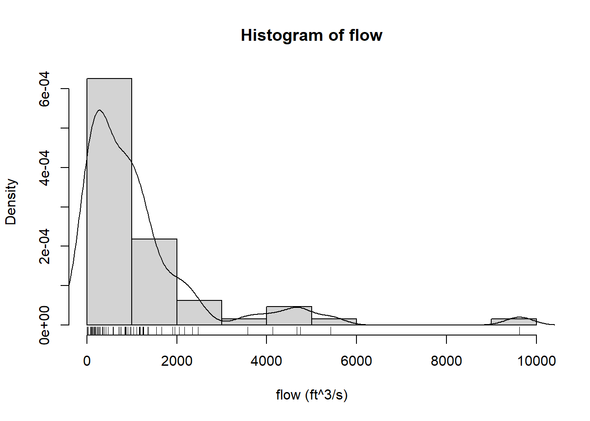
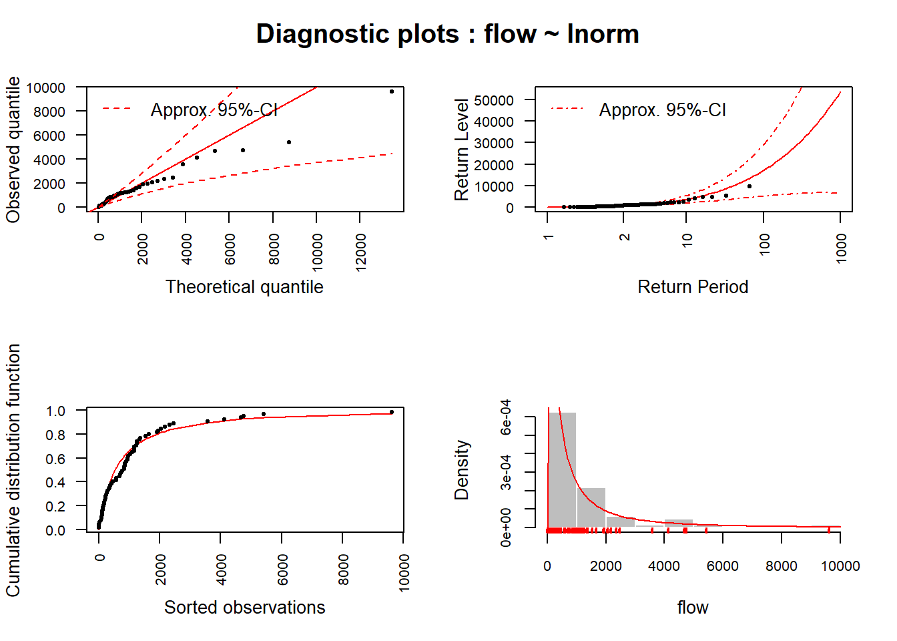
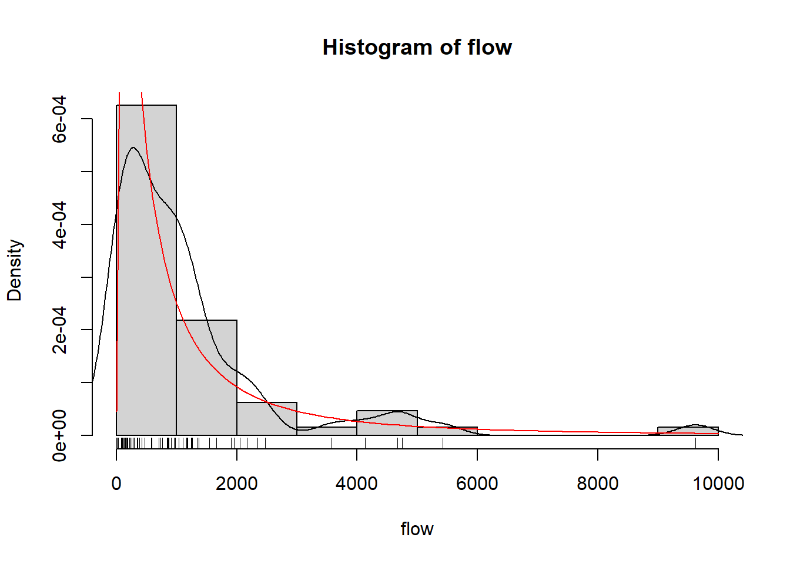
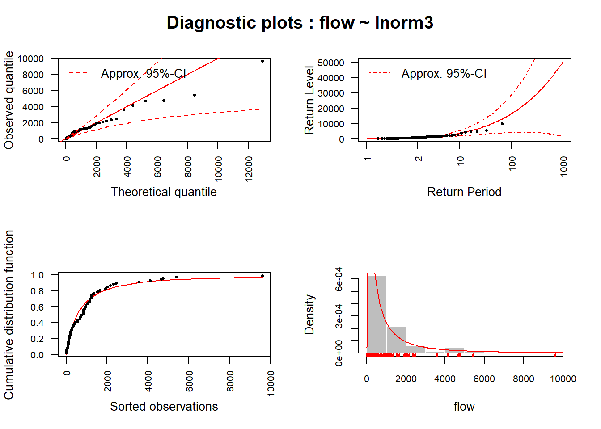
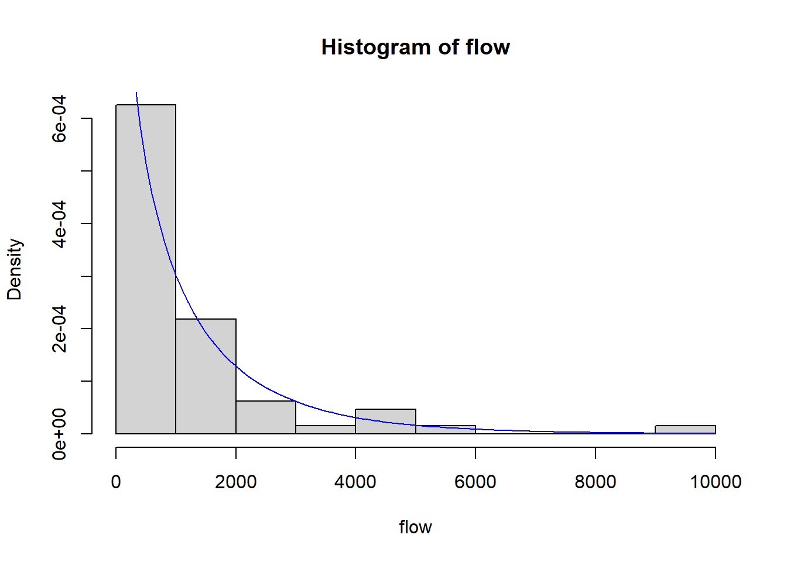
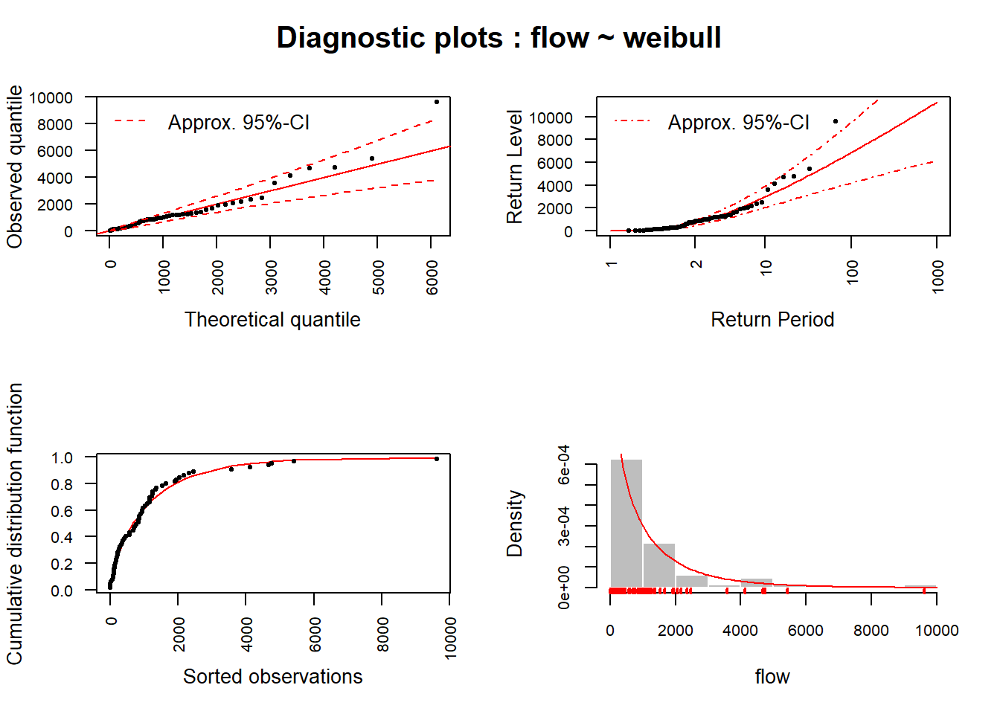

## load required packages
library("FAmle")
library("FAdist")
library("MASS")
library("zoo")
library("readr")
library("dplyr")
library("lubridate")14-Extreme Value Estimation with Package FAmle
1 Introduction
Here, it is described how to fit distributions to a given hydrological data set. Our intention here is to provide an example how easy and powerful distribution fitting can be done in R. More information can be found in Rice(2003), Hogg(2004), Coles (2001) and in the help file of package FAmle (Aucoin, 2001). For the given example, a data set from the US Geological Survey (USGS, http://waterdata.usgs.gov/nwis will be employed. The dataset consists of annual maximum daily peakflows (ft3/s) that were observed at a hydrometric station located at River James (Columbia). First the packages and the data set is loaded, then it is tested for potential trends and autocorrelation
## St James River, Columbia
jamesriver <- read_csv("jamesriver.csv", col_types = c("D", "n"))
flow <- jamesriver$flow
par(mfrow=c(1, 2))
plot(jamesriver$date, jamesriver$flow, type="b", cex=0.4, pch=19, cex.axis=0.75, xlab="Year", ylab="Flow",
main="James River")
lines(lowess(jamesriver), col="red")
acf(jamesriver$flow, main="")
2 Empirical Quantiles
hist(flow, probability=TRUE, xlab="flow (ft^3/s)")
rug(flow)
lines(density(flow))

If the data series is long enough, one may be tempted to use empirical quantiles, i.e. model and parameter free extrapolation from the data. We use this value as a baseline for the comparison with the model derived quantiles:
quantile(p=c(0.95, 0.99), flow) 95% 99%
4589 6974 3 Lognormal Distribution with 2 Parameters
The Lognormal distribution is often regarded as a plausible model for this type of data. However, other distributions such as Weibull, Lognormal with three parameters, and Johnson distributions may provide better fitting results. We will try some of them. The parameters of the distribution are estimated using maximum likelihood by the mle function con tained in package “FAmle”, except for the Johnson distribution wich needs a different procedure. Parameters of the fitting can be obtained as follows. It is important to pay attention to goodness-of-fit parameters (log likelihood and AIC) which provide us information about how good the model explains the corresponding data set.
fitLn2 <- mle(x=flow, dist="lnorm", start=c(0.1, 0.1))
fitLn2-----------------------------------------
Maximum Likelihood Estimates
-----------------------------------------
Data object: flow
Distribution: lnorm
--------- Parameter estimates -----------
meanlog.hat sdlog.hat
Estimate 6.294 1.4878
Std.err 0.186 0.1319
---------- Goodness-of-Fit --------------
log.like aic ad rho
-518.8617 1041.7234 0.9627 0.9884
-----------------------------------------## automatic diagnostic plots
plot(x=fitLn2, ci=TRUE, alpha=0.05)
## which probability has a flow >= 3000
## --> two functions to provide the same result:
### standard R function
plnorm(3000, meanlog=fitLn2$par.hat[1], sdlog=fitLn2$par.hat[2])[1] 0.8751862### function from the FAmle package
distr(x=3000, dist="lnorm", param=c(fitLn2$par.hat[1], fitLn2$par.hat[2]), type="p")[1] 0.8751862## same for quantile (flow >= 95% quantile)
qlnorm(p=0.95, meanlog=fitLn2$par.hat[1], sdlog=fitLn2$par.hat[2])[1] 6252.526distr(x=0.95, dist="lnorm", param=c(fitLn2$par.hat[1], fitLn2$par.hat[2]), type="q")[1] 6252.526## empirical quantile
quantile(p=0.95, flow) 95%
4589

The function mle() provides also some goodness-of-fit statistics. This function creates a special kind of object which can be used inside of the standard R functions, e.g., plot(). A function called plot.mle may be used to generate a series of four diagnosis plots (Figure 3) for the mle object. Diagnostic plots for the model fitted to the dataset. The dashed red lines correspond to the lower and upper confidence bounds (definded by alpha) of the approximated 95% confidence intervals derived using the observed Fisher’s information matrix in conjunction with the so-called delta method.
Once the function is fitted to a distribution, these parameters can be used to calculate different quan- tiles. In this way we can find, for example, the value of the flow which has a probability lower than 5% or which is the probability of a flooding event of a certain flow.
Now repeat for the 99% quantile
…
And extreme floods: 1% quantile
…
The probability of a peakflow of 3000 ft3/s is obtained by either function “plnorm” or “distr” like follows:
plnorm(3000, meanlog=fitLn2$par.hat[1], sdlog=fitLn2$par.hat[2], lower.tail=TRUE)[1] 0.8751862distr(x=3000, dist="lnorm", param=fitLn2$par.hat, type="p")[1] 0.87518624 Lognormal Distribution with 3 Parameters
Let’s repeat the procedure for a Lognormal distribution with three parameters. In this case the package FAdist is required. Results are presented in ?@fig-mle-ln3
## Fit a lognormal distribution with three parameters
fitLn3 <- mle(x=flow, dist="lnorm3", start=c(0.5, 0.5, 0.5))
fitLn3-----------------------------------------
Maximum Likelihood Estimates
-----------------------------------------
Data object: flow
Distribution: lnorm3
--------- Parameter estimates -----------
shape.hat scale.hat thres.hat
Estimate 1.4640 6.3065 -1.369
Std.err 0.1552 0.1874 5.165
---------- Goodness-of-Fit --------------
log.like aic ad rho
-518.5289 1043.0578 0.8941 0.9891
-----------------------------------------## diagnostic plots
hist(flow, probability=TRUE)
rug(flow)
lines(density(flow))
funLn3 <- function(flow) distr(x=flow, model=fitLn3, type="d")
curve(funLn3, add=TRUE, col="red")
plot(x=fitLn3, ci=TRUE, alpha=0.05)
## theroretical and empirical quantiles
qlnorm3(p=0.95, shape=fitLn3$par.hat[1], scale=fitLn3$par.hat[2], thres=fitLn3$par.hat[3])[1] 6089.576distr(x=0.95, dist="lnorm3", param=c(fitLn3$par.hat[1], fitLn3$par.hat[2], fitLn3$par.hat[3]), type="q")[1] 6089.576quantile(p=0.95, flow) 95%
4589 ## Fit Weibull distribution to the data
hist(flow, probability=TRUE)
fitW <- mle(x=flow, dist="weibull", start=c(0.1, 0.1))
fitW-----------------------------------------
Maximum Likelihood Estimates
-----------------------------------------
Data object: flow
Distribution: weibull
--------- Parameter estimates -----------
shape.hat scale.hat
Estimate 0.82050 1070
Std.err 0.07811 172
---------- Goodness-of-Fit --------------
log.like aic ad rho
-515.2496 1034.4993 0.3602 0.9681
-----------------------------------------## diagnostics
funW <- function(flow) distr(x=flow, model=fitW, type="d")
curve(funW, add=TRUE, col="blue")
plot(x=fitW, ci=TRUE, alpha=0.05)
## quantiles
qweibull(p=0.99, shape=fitW$par.hat[1], scale=fitW$par.hat[2])[1] 6884.165distr(x=0.99, dist="weibull", param=c(fitW$par.hat[1], fitW$par.hat[2]), type="q")[1] 6884.165quantile(p=0.99, flow) 99%
6974 ## Which distribution is the best according to the AIC?
fitLn2$aic[1] 1041.723fitLn3$aic[1] 1043.058fitW$aic[1] 1034.499




5 Exercise: Extreme values of the Elbe river
Now load the Elbe River data from the beginning of the course and note that we need annual maximum values.
elbe <- read_csv("https://raw.githubusercontent.com/tpetzoldt/datasets/main/data/elbe.csv", , col_types = c("D", "n"))
## annual maximum discharge
elbe_annual <-
mutate(elbe, year = year(date)) |>
group_by(year) |>
summarize(discharge = max(discharge))
plot(discharge ~ year, data = elbe_annual)
## check for trend and autocorrelation between years
MannKendall(elbe_annual$discharge)
acf(elbe_annual$discharge)
fitLn3 <- mle(x=elbe_annual$discharge, dist="lnorm3", start=c(1, 5, 100))
fitLn3
flow <- elbe_annual$discharge
hist(flow, probability=TRUE, breaks = 10)
rug(flow)
lines(density(flow))
xnew <- seq(min(flow), max(flow), length = 100)
funLn3 <- function(flow) distr(x=flow, model=fitLn3, type="d")
lines(xnew, funLn3(xnew), col="red")Important: The method described so far assumes stationarity of conditions, i.e. absence of meteorological and hydrological trends. Discuss, how climate warming already influences validity of the described method, and which methods need to be applied instead.